SO scans continuously in azimuth at fixed elevation, so instead of discrete pointings we simulate one
sidereal day of the idealized scan, accumulate per-pixel hit and mean-time maps for every optics tube with
pixell, and materialize them into a standard ObsTable with one row per
(tube, observed pixel, day). Source queries map the source to its pixel, so the normal
simulate_lightcurves path is used unchanged.
| Mode | full |
|---|---|
| Resolution (deg) / sample interval (s) | 0.5 / 0.250 |
| Block length (h) | 1.0 |
| Tubes | 0, 1, 2, 3, 4, 5, 6, 7, 8, 9, 10, 11, 12 |
| Start / days | 2026-10-14 / 14 |
| ObsTable rows | 16,408,140 |
| Observed Dec range (deg) | -62.8 to 24.2 |
| Per tube visit: median duration (min) / exposure (s) / passes | 4.0 / 4.0 / 3.0 |
| East / west fraction | 0.53/0.47 |
| LF: median revisit (h) / visits per day / span (min) / exposure (s) | 23.93 / 1.00 / 4.02 / 3.75 |
| MF: median revisit (h) / visits per day / span (min) / exposure (s) | 17.37 / 1.00 / 12.04 / 18.75 |
| UHF: median revisit (h) / visits per day / span (min) / exposure (s) | 17.01 / 1.00 / 12.05 / 7.75 |
| Pixelization |error| in duration (s): median / 90% | 0.50 / 165.18 |
| Pixelization |error| in exposure (s): median / 90% | 0.50 / 1.00 |
| Pixelization |error| in passes: median / 90% | 0.00 / 1.00 |
| Pixelization |error| in mean time (s): median / 90% | 26.75 / 77.46 |
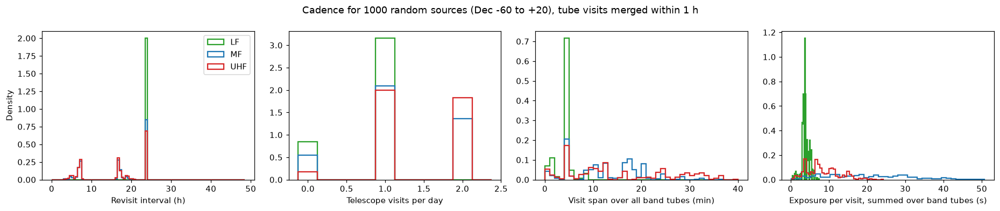
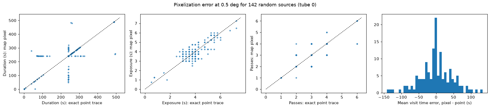
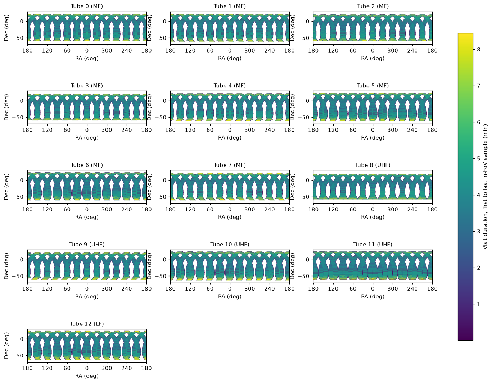
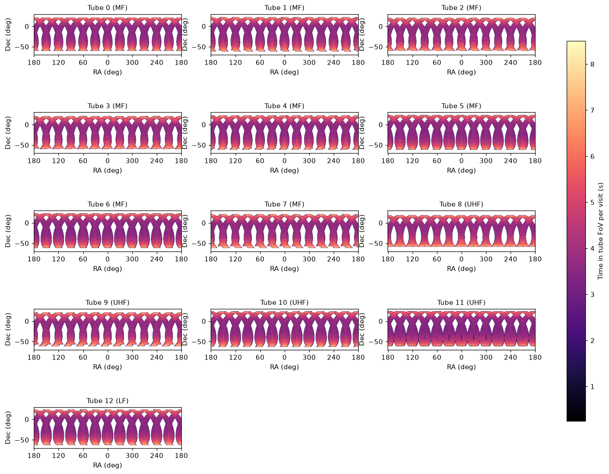
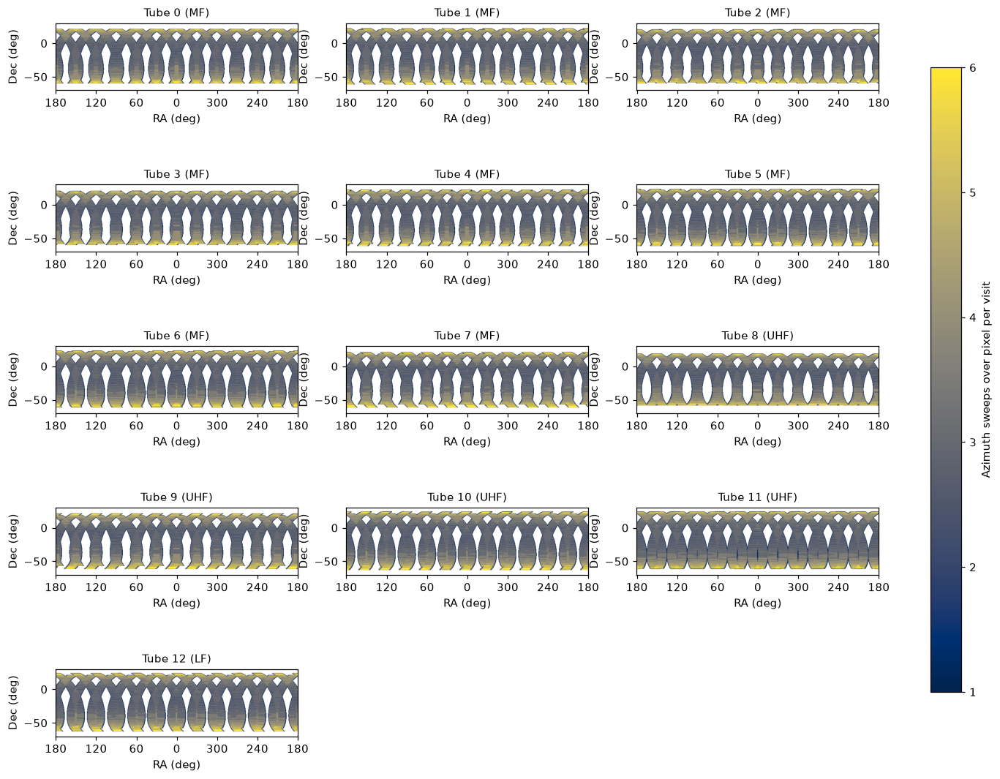
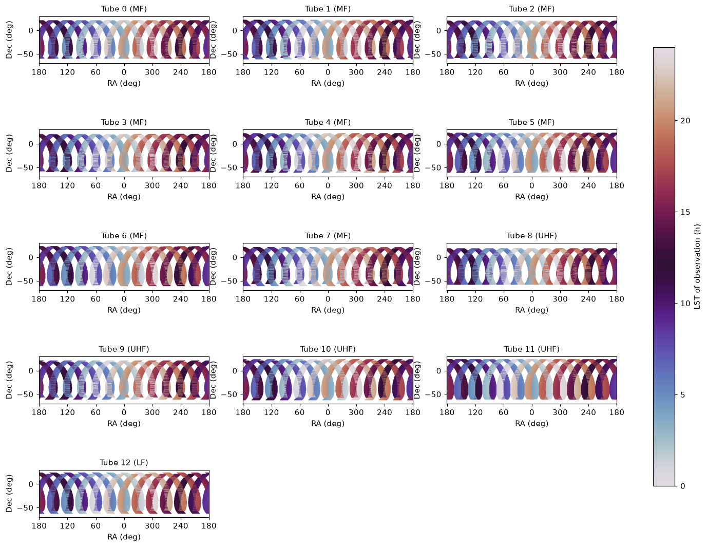
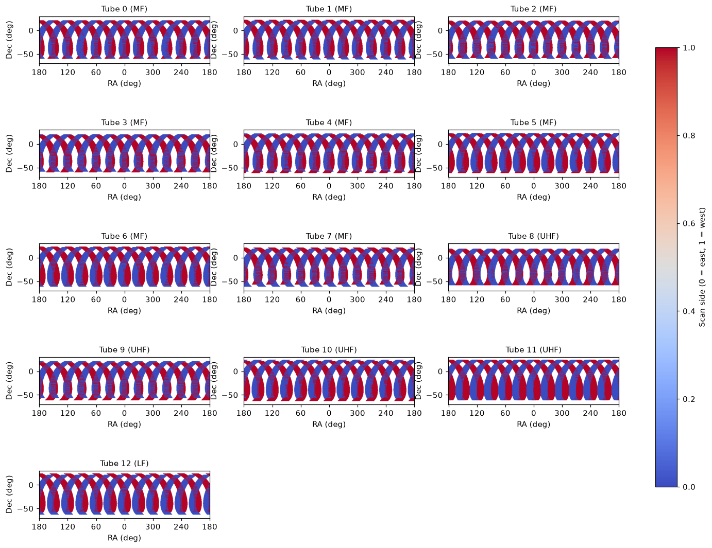
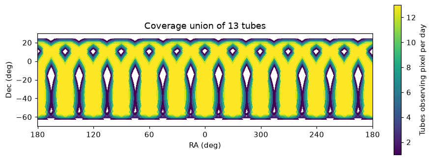
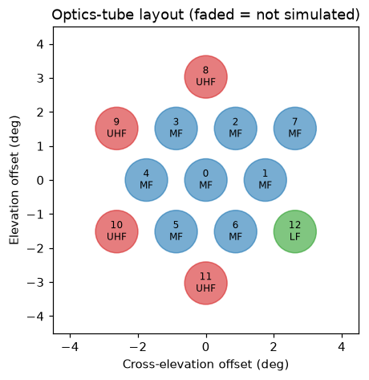
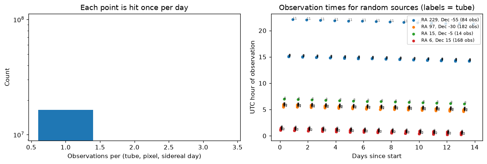
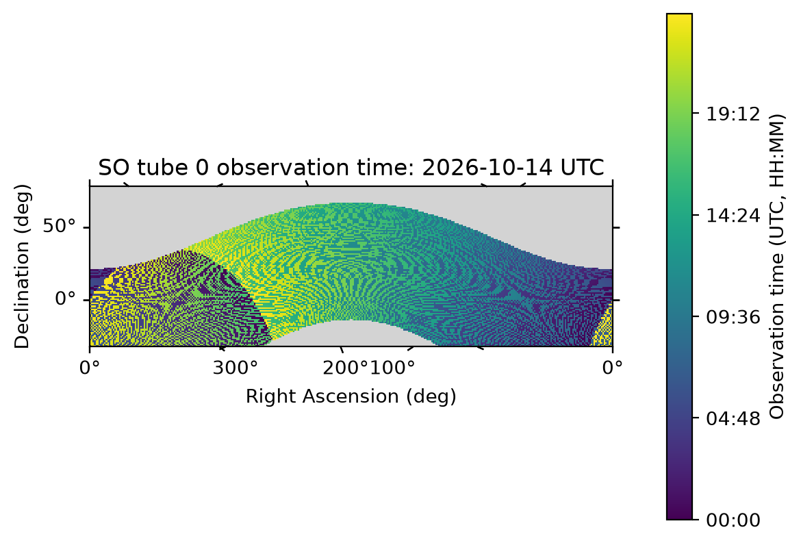